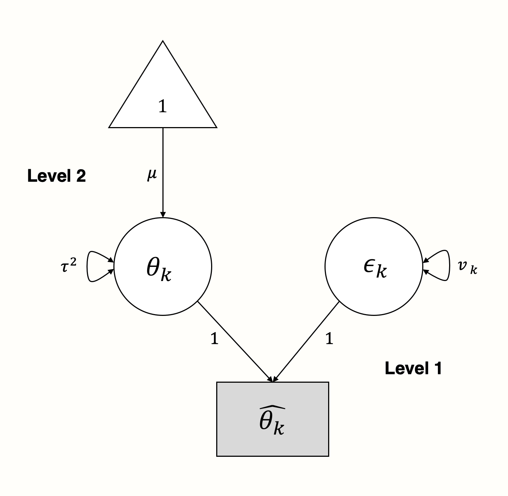

| Symbol | Name | Description |
|---|---|---|
| $\square$ | 矩形 | 显性/观察到的变量。 |
| $\circ$ | 圆形 | 潜在/未观察到的变量。 |
| $\triangle$ | 三角形 | 截距（固定的 1 的向量）。 |
| $\rightarrow$ | 箭头 | 预测。箭头开始处的变量预测箭头结束处的变量：预测变量 $\rightarrow$ 目标变量。 |
| $\leftrightarrow$ | 双向箭头 | （共）方差。如果双向箭头连接两个变量（矩形/圆形），则表示两个变量之间的协方差/相关性。如果双向箭头在一个变量的顶部形成一个循环，则表示该变量的方差。 |
结构方程模型元分析

I n 在上一章中，我们展示了元分析模型具有固有的多层结构。例如，这种特性可以用于将传统元分析扩展到三层模型。
统计方法的一个特殊之处在于，它们通常被放入单独的“盒子”中。在研究和实践中，它们被视为不相关的，但事实并非如此。例如，对于许多社会科学专业的学生来说，听到方差分析（ANOVA）和带有分类预测变量的线性回归本质上做的是同一件事，通常会感到惊讶1。这种情况经常发生，因为这两种方法传统上用于不同的背景，并作为独立的实体进行教授。
类似地，直到最近，研究人员才开始将多层模型视为结构方程模型的一种特殊形式，或 SEM [@mehta2005people; @bauer2003estimating]。正如我们所了解的，每个元分析都基于一个多层模型。因此，我们也可以将元分析视为结构方程模型，其中合并效应量被视为潜在（或未观察到的）变量 [@cheung2015meta, chapter 4.6]。简而言之：元分析是多层模型；因此，它们也可以表示为结构方程模型。
这不仅意味着我们可以从结构方程建模的角度来概念化之前涵盖的元分析类型。它还允许我们使用 SEM 来构建更复杂的元分析模型。使用元分析 SEM，我们可以测试因子分析模型，或者执行包含多个感兴趣结果的多元元分析（仅举几个应用）。
当我们想要评估文献中的某些模型在考虑所有可用证据后是否仍然成立时，元分析 SEM 会有所帮助。相反，它也可以用于检查某个理论是否没有证据支持；或者，更有趣的是，它是否只适用于某个特定个体或实体的亚组。
当然，应用元分析 SEM 技术的前提是对结构方程建模有基本的了解。因此，在下一节中，我们将简要讨论结构方程建模背后的总体思路，以及它的元分析扩展。
什么是元分析结构方程模型？
结构方程模型是一种用于检验关于显性（观察到的）和潜在变量之间关系的假设的统计技术 [@kline2015principles, chapter 1]。潜在变量要么未被观察到，要么无法观察到。例如，人格是一种只能间接测量的结构，例如通过问卷中的不同项目。在 SEM 中，使用显性、测量变量对显性和潜在变量之间假设的关系（“结构”）进行建模，同时考虑到它们的测量误差。
SEM 分析与“传统”统计假设检验（例如 \(t\) 检验）有些不同。通常，统计检验涉及针对零假设进行检验，例如 \(H_0: \mu_1 = \mu_2\)（其中 \(\mu_1\) 和 \(\mu_2\) 是两组的均值）。在这样的检验中，研究人员“旨在”拒绝零假设，因为这允许得出两组不同的结论。然而，在 SEM 中，事先提出了一个特定的结构模型，如果拟合优度足够，研究人员反而“旨在”接受这个模型 [@cheung2015meta, chapter 2.4.6]。
模型规范
通常，SEM 通过一系列矩阵进行数学上的指定和表示。您可以将矩阵想象成一个简单的表格，包含行和列，很像 R 中的 data.frame 对象（事实上，大多数数据框可以使用 as.matrix 函数轻松转换为矩阵）。在视觉上，SEM 可以表示为路径图。这样的路径图通常非常直观，并且在解释上很简单。因此，我们将首先以可视化方式指定 SEM，然后转到矩阵表示法。
路径图
路径图以图形方式表示我们的 SEM。关于如何绘制路径图没有完全一致的意见，但有一些约定俗成。以下是路径图的主要组成部分，以及它们所代表的含义。
作为说明，让我们为一个简单的线性（“非元分析”）回归模型创建一个路径图，其中我们想要用 \(x\) 预测 \(y\)。模型公式如下所示：
\[\begin{equation} y_i = \beta_0 + \beta_1x_i + e_i (\#eq:sem1) \end{equation}\]
现在，让我们“解构”这个公式。在该模型中，\(x_i\) 和 \(y_i\) 是观察到的变量。没有未观察到的（潜在的）变量。\(y\) 的真实总体均值是回归截距 \(\beta_0\)，而 \(\mu_x\) 表示 \(x\) 的总体均值。我们观察到的预测变量 \(x\) 的方差用 \(\sigma^2_x\) 表示。假设 \(x\) 不是 \(y\) 的完美预测变量，那么与 \(y\) 相关联的将存在一些残差误差方差 \(\sigma^2_{e_y}\)。有两个回归系数：\(\beta_0\)，截距，以及 \(\beta_1\)，\(x\) 的斜率系数。
使用这些组成部分，我们可以为我们的线性回归模型构建一个路径图，如下所示。

我们也可以使用这个图形模型作为起点来重新组装回归模型方程。从该模型中，我们可以推断出 \(y\) 受两个组成部分的影响：\(x \times \beta_1\) 和 \(1 \times \beta_0\)。如果我们把这两个部分加在一起，我们再次得到之前 \(y\) 的公式。
矩阵表示
有几种方法可以通过矩阵来表示 SEM [@joreskog2006lisrel; @muthen2012mplus; @mcardle1984some]。在这里，我们将重点关注网状作用模型公式，或 RAM [@mcardle1984some]。我们这样做是因为这个公式被我们稍后将要介绍的 {metaSEM} 包使用。RAM 使用四个矩阵：\(\boldsymbol{F}\)、\(\boldsymbol{A}\)、\(\boldsymbol{S}\) 和 \(\boldsymbol{M}\)。因为 \(\boldsymbol{M}\) 矩阵对于拟合我们涵盖的元分析 SEM 不是必需的，所以我们在这里省略它 [有关更广泛的介绍，请参见 @cheung2015meta]。
我们现在将为之前的线性回归模型指定剩余的 \(\boldsymbol{A}\)、\(\boldsymbol{F}\) 和 \(\boldsymbol{S}\) 矩阵。这三个矩阵都具有相同数量的行和列，与我们在模型中拥有的变量相对应：\(x\) 和 \(y\)。因此，我们的回归模型的通用矩阵结构始终如下所示：

\(\boldsymbol{A}\) 矩阵：单箭头
\(\boldsymbol{A}\) 矩阵表示我们路径模型中的非对称（单）箭头。我们可以通过搜索箭头开始的变量的列条目 (\(x\))，然后搜索箭头结束的变量的矩阵行条目 (\(y\)) 来填充这个矩阵。我们的箭头的值，\(\beta_1\)，放在所选列和行在矩阵 (\(i_{y,x}\)) 中相交的位置。鉴于我们的模型中变量之间没有其他路径，我们用 0 填充剩余字段。因此，我们的示例的 \(\boldsymbol{A}\) 矩阵如下所示：
\(\boldsymbol{S}\) 矩阵：单箭头
\(\boldsymbol{S}\) 矩阵表示我们想要为包含的变量估计的（共）方差。对于我们的预测变量 \(x\)，我们需要估计方差 \(\sigma^2_x\)。对于我们预测的变量 \(y\)，我们想知道预测误差方差 \(\sigma^2_{e_y}\)。因此，我们像这样指定 \(\boldsymbol{S}\)：

\(\boldsymbol{F}\) 矩阵：单箭头
\(\boldsymbol{F}\) 矩阵允许我们指定模型中的观察到的变量。为了指定一个变量已被观察到，我们只需在矩阵的相应对角线字段中插入 1。鉴于 \(x\) 和 \(y\) 都在我们的模型中被观察到，我们将 1 插入到两个对角线字段中：

一旦设置了这些矩阵，就可以估计我们 SEM 中的参数，并评估指定的模型与数据的拟合程度。这涉及一些矩阵代数和通过最大似然估计进行参数估计，我们在此省略其数学细节。如果您有兴趣了解此步骤背后的细节，您可以查看 @cheung2015meta, chapter 4.3。
从 SEM 角度看元分析
我们现在将结合我们关于元分析模型和 SEM 的知识，将元分析公式化为结构方程模型 [@cheung2008model]。
首先，让我们回到随机效应模型的公式。之前，我们已经描述了元分析模型遵循一个多层结构（参见第 @ref(multilevel-nature) 章），如下所示：
第 1 层
\[\begin{equation} \hat\theta_k = \theta_k + \epsilon_k (\#eq:sem2) \end{equation}\]
第 2 层
\[\begin{equation} \theta_k = \mu + \zeta_k (\#eq:sem3) \end{equation}\]
在第一层，我们假设研究 \(k\) 中报告的效应量 \(\hat\theta_k\) 是真实效应量 \(\theta_k\) 的估计量。观察到的效应量由于抽样误差 \(\epsilon_k\) 而偏离真实效应量，抽样误差由方差 \(\widehat{\text{Var}}(\hat\theta_k)=v_k\) 表示。
在随机效应模型中，我们假设即使每个研究的真实效应量也仅从第 2 层的真实效应量总体中抽取。这个真实效应量总体均值，\(\mu\)，是我们想要估计的，因为它代表了合并效应量。为此，我们还需要估计真实效应量的方差 \(\widehat{\text{Var}}(\theta)=\tau^2\)（即研究间的异质性）。固定效应模型是随机效应模型的一个特例，其中 \(\tau^2\) 被假定为零。
将此模型表示为 SEM 图非常简单。我们使用第 1 层的参数作为潜在变量来“解释”我们观察到的效应量是如何产生的 [@cheung2015meta, chapter 4.6.2]：

在图形模型中，我们看到一些研究 \(k\) 的观察到的效应量 \(\hat\theta_k\) 受两个分支的“影响”：方差为 \(v_k\) 的抽样误差 \(\epsilon_k\) 和方差为 \(\tau^2\) 的真实效应量 \(\theta_k\)。
两阶段元分析 SEM 方法
上面，我们从 SEM 的角度定义了（随机效应）元分析模型。虽然这从理论角度来看很有趣，但上面的模型并不比我们之前介绍的元分析技术更强大：它描述了假设随机效应模型来合并效应量。
为了真正利用元分析 SEM 的多功能性，需要一个两步法 [@tang2016testing; @cheung2015meta, chapter 7]。在两阶段结构方程模型（TSSEM）中，我们首先合并每个研究的效应量。通常，这些效应量是几个变量之间的相关性，我们想要使用这些变量进行建模。对于每个研究 \(k\)，我们有一组相关性，用向量 \(\boldsymbol{r_k} = (r_1, r_2, \dots, r_p)\) 表示，其中 \(p\) 是（唯一）相关性的总数。与正常的随机效应模型一样，我们假设研究 \(k\) 中观察到的每个相关性由于抽样误差 \(\epsilon_k\) 和研究间异质性 \(\zeta_k\) 而偏离真实平均相关性 \(\rho\)。
当我们考虑到 \(\boldsymbol{r_k}\) 代表包含在一个研究中的几个相关性时，我们得到以下随机效应模型的方程：
\[\begin{align} \boldsymbol{r_k} &= \boldsymbol{\rho} + \boldsymbol{\zeta_k} + \boldsymbol{\epsilon_k} \notag \\ \begin{bmatrix} r_1 \\ r_2 \\ \vdots \\ r_p \end{bmatrix} &= \begin{bmatrix} \rho_1 \\ \rho_2 \\ \vdots \\ \rho_p \end{bmatrix} + \begin{bmatrix} \zeta_1 \\ \zeta_2 \\ \vdots \\ \zeta_p \end{bmatrix} + \begin{bmatrix} \epsilon_1 \\ \epsilon_2 \\ \vdots \\ \epsilon_p \end{bmatrix} (\#eq:sem4) \end{align}\]
使用这个模型，我们可以计算一个合并相关性的向量，\(\boldsymbol{r}\)。第一个合并步骤允许评估研究之间的效应异质性，以及是否应该使用随机效应模型或亚组分析。由于 {metaSEM} 包使用的基于最大似然的方法，即使是数据部分缺失的研究也可以包含在这一步中。
在第二步中，我们然后使用加权最小二乘法（参见第 @ref(metareg-model-fit) 章）来拟合我们指定的结构方程模型。指定模型的函数 \(\rho(\hat\theta)\) 是 [@cheung2009two; @cheung2015meta, chapter 7.4.2]：
\[\begin{equation} F_{\text{WLS}}(\hat\theta) = (\boldsymbol{r} - \rho(\hat\theta))^\top \boldsymbol{V}^{-1} ({r} - \rho(\hat\theta)) (\#eq:sem5) \end{equation}\]
其中 \(\boldsymbol{r}\) 是合并的相关向量。这个公式的重要部分是 \(\boldsymbol{V}^{-1}\)，它是一个包含 \(\boldsymbol{r}\) 的协方差的逆矩阵。这个矩阵用于加权。重要的是，无论我们假设随机效应模型还是固定效应模型，第二步中的公式都是相同的，因为研究间异质性（如果存在）已经在第 1 步中处理了。
多元元分析
是时候深入研究我们的第一个已完成的元分析 SEM 示例了。我们将首先使用 SEM 方法进行多元元分析，这是我们尚未介绍的内容。在多元元分析中，我们尝试同时估计多个效应。当我们研究的研究主题有多个主要结果（而不仅仅是一个结果）时，这种类型的元分析很有帮助。
想象一下，我们正在检查某种类型的治疗的效果。对于这种治疗，可能存在两种被大多数专家认为重要的结果，因此在大多数研究中都会评估。多元元分析可以通过在一个模型中联合估计两种结果的效应量来解决这个问题。这种多元方法还允许我们将两种结果之间的相关性考虑在内。这可以用于确定在一个结果上具有高效应量的研究是否在另一个结果上也具有更高的效应量。或者，我们可能还会发现两种结果之间存在负相关，或者根本没有关联。
值得注意的是，多元元分析也可以在 SEM 框架之外执行 [@schwarzer2015meta, chapter 7; @mvmeta]。然而，在这里，我们将向您展示如何从 SEM 的角度执行它们。在本示例和以下示例中，我们将使用 {metaSEM}，这是一个由 Mike Cheung [-@metasem] 开发的用于元分析 SEM 的出色包。与往常一样，我们首先必须安装 {metaSEM} 包并从您的库中加载它。
library(metaSEM)在我们的示例中，我们将再次使用 {dmetar} 的 ThirdWave 数据集（参见第 @ref(pre-calculated-es) 章）。默认情况下，此数据集仅包含一个结果（感知压力）的效应。现在，想象一下，此元分析中的大多数研究还测量了焦虑的效应，这是另一个重要的与心理健康相关的结果。因此，我们可以使用多元元分析来联合估计压力和焦虑的效应，以及它们如何相互关联。
为了继续，我们首先必须创建一个新的数据框，其中包含两种结果的数据。首先，我们定义一个包含每个研究中报告的焦虑效应（表示为 Hedges’ \(g\)）的向量，以及它们的标准误差。我们还需要定义一个包含每个研究中报告的压力和焦虑之间协方差的向量。一项研究没有评估焦虑结果，因此我们在三个向量中使用 NA 来表示信息缺失。
# 定义包含焦虑效应（Hedges g）的向量
Anxiety <- c(0.224,0.389,0.913,0.255,0.615,-0.021,0.201,
0.665,0.373,1.118,0.158,0.252,0.142,NA,
0.410,1.139,-0.002,1.084)
# 焦虑效应的标准误差
Anxiety_SE <- c(0.193,0.194,0.314,0.165,0.270,0.233,0.159,
0.298,0.153,0.388,0.206,0.256,0.256,NA,
0.431,0.242,0.274,0.250)
# 压力和焦虑结果之间的协方差
Covariance <- c(0.023,0.028,0.065,0.008,0.018,0.032,0.026,
0.046,0.020,0.063,0.017,0.043,0.037,NA,
0.079,0.046,0.040,0.041)然后，我们将此数据与 ThirdWave 中的信息一起使用来创建一个名为 ThirdWaveMV 的新数据框。在此数据集中，我们包括效应量方差 Stress_var 和 Anxiety_var，可以通过将标准误差平方获得。
ThirdWaveMV <- data.frame(Author = ThirdWave$Author,
Stress = ThirdWave$TE,
Stress_var = ThirdWave$seTE^2,
Anxiety = Anxiety,
Anxiety_var = Anxiety_SE^2,
Covariance = Covariance)
format(head(ThirdWaveMV), digits = 2)## Author Stress Stress_var Anxiety Anxiety_var Covariance
## 1 Call et al. 0.71 0.068 0.224 0.037 0.023
## 2 Cavanagh et al. 0.35 0.039 0.389 0.038 0.028
## 3 DanitzOrsillo 1.79 0.119 0.913 0.099 0.065
## 4 de Vibe et al. 0.18 0.014 0.255 0.027 0.008
## 5 Frazier et al. 0.42 0.021 0.615 0.073 0.018
## 6 Frogeli et al. 0.63 0.038 -0.021 0.054 0.032
正如我们所看到的，新的数据集包含压力和焦虑的效应量，以及各自的抽样方差。Covariance 列存储每个研究中测量的压力和焦虑之间的协方差。
实践中一个常见的问题是，原始研究中未报告两个结果之间的协方差（或相关性）。如果发生这种情况，我们必须根据关于结果之间相关性的合理假设来估计协方差。
假设我们还不知道每个研究中的协方差。我们如何估计它？一个好方法是寻找评估两种结果之间相关性的先前文献，最好是在我们现在正在处理的相同类型的背景下。假设我们在文献中发现，在临床试验的后测中，压力和焦虑非常高度相关，其中 \(r_{\text{S,A}} \approx\) 0.6。基于这种假设的相关性，我们可以使用以下公式来近似某个研究 \(k\) 的协方差 [@schwarzer2015meta, chapter 7]：
\[\begin{equation} \widehat{\text{Cov}}(\theta_{1},\theta_{2}) = SE_{\theta_{1}} \times SE_{\theta_{2}} \times \hat\rho_{1, 2} (\#eq:sem6) \end{equation}\]
使用我们的示例数据并假设 \(r_{\text{S,A}} \approx\) 0.6，这个公式可以在 R 中这样实现：
# 我们使用方差的平方根，因为 SE = sqrt(var)
cov.est <- with(ThirdWaveMV,
sqrt(Stress_var) * sqrt(Anxiety_var) * 0.6)请注意，当我们以这种方式计算协方差时，假设相关性的选择会对结果产生深刻的影响。因此，强烈建议 (1) 始终报告假设的相关系数，以及 (2) 进行敏感性分析，在敏感性分析中，我们检查结果如何根据我们选择的相关性而变化。
指定模型
要指定多元元分析模型，我们不必以编程方式遵循 TSSEM 过程（参见上一章），也不必指定任何 RAM 矩阵。对于这样一个相对简单的模型，我们可以使用 {metaSEM} 中的 meta 函数一步到位地拟合元分析 SEM。要使用 meta，我们只需要指定三个基本参数：
y。包含效应量数据集的数据列。在多元元分析中，我们必须使用cbind组合我们想要包含的效应量列。v。包含效应量数据集的数据列。在多元元分析中，我们必须使用cbind组合我们想要包含的方差列。我们还必须包括包含效应量之间协方差的列。参数的结构应为cbind(variance_1, covariance, variance_2)。data。存储效应量和方差的数据集。
我们将拟合的模型保存在名称 m.mv 下。重要的是，在运行 meta 之前，请确保 {meta} 包未加载。{meta} 和 {metaSEM} 中的一些函数具有相同的名称，这可能会在 R 中运行代码时导致错误。可以使用 detach 函数“卸载”包。
可以使用 summary 检查生成的 m.mv 对象。
m.mv <- meta(y = cbind(Stress, Anxiety),
v = cbind(Stress_var, Covariance, Anxiety_var),
data = ThirdWaveMV)
summary(m.mv)## [...]
## Coefficients:
## Estimate Std.Error lbound ubound z value Pr(>|z|)
## Intercept1 0.570 0.087 0.399 0.740 6.5455 5.9e-13 ***
## Intercept2 0.407 0.083 0.244 0.570 4.9006 9.5e-09 ***
## Tau2_1_1 0.073 0.049 -0.023 0.169 1.4861 0.1372
## Tau2_2_1 0.028 0.035 -0.041 0.099 0.8040 0.4214
## Tau2_2_2 0.057 0.042 -0.025 0.140 1.3643 0.1725
## ---
## Signif. codes: 0 ‘***’ 0.001 ‘**’ 0.01 ‘*’ 0.05 ‘.’ 0.1 ‘ ’ 1
## [...]
##
## Heterogeneity indices (based on the estimated Tau2):
## Estimate
## Intercept1: I2 (Q statistic) 0.6203
## Intercept2: I2 (Q statistic) 0.5292
##
## Number of studies (or clusters): 18
## [...]
## OpenMx status1: 0 ("0" or "1": The optimization is considered fine.
## Other values may indicate problems.)评估结果
鉴于 SEM 模型是使用最大似然算法拟合的，我们首先要做的是检查输出末尾的 OpenMx status。最大似然估计是一种优化过程，其中参数会迭代更改，直到找到手头数据的最佳解决方案。但是，尤其是在更复杂的模型中，即使经过多次迭代，也可能无法达到此最佳值；最大似然算法将停止并输出到目前为止已近似的参数值。但是，我们的模型组件的那些值很可能是不正确的，不应被信任。
我们模型的 OpenMx status 为 0，这表明最大似然估计运行良好。如果状态不是 0 或 1，则需要使用以下代码重新运行模型：
rerun(m.mv)在输出中，两个合并的效应量显示为 Intercept1 和 Intercept2。效应量按照我们将其插入到 meta 调用中的顺序进行编号。我们可以看到合并的效应量是 \(g_{\text{Stress}}\) = 0.57 和 \(g_{\text{Anxiety}}\) = 0.41。两个效应量都很显著。在 Heterogeneity indices 下，我们还可以看到 \(I^2\) 的值，分别为 \(I^2_{\text{Stress}}\) = 62% 和 \(I^2_{\text{Anxiety}}\) = 53%，表明两个结果中都存在相当大的研究间异质性。
还提供了研究间异质性方差 \(\tau^2\) 的直接估计。我们看到不仅有两个估计，而且有三个。要理解这意味着什么，我们可以从 m.mv 对象中提取“随机”值。
tau.coefs <- coef(m.mv, select = "random")然后，我们使用 vec2symMat 函数创建一个系数矩阵。我们为矩阵的行和列赋予变量的名称：Stress 和 Anxiety。
# 创建矩阵
tc.mat <- vec2symMat(tau.coefs)
# 标记行和列
dimnames(tc.mat)[[1]] <- dimnames(tc.mat)[[2]] <- c("Stress",
"Anxiety")
tc.mat Stress Anxiety
Stress 0.07331199 0.02894342
Anxiety 0.02894342 0.05753271我们现在更好地理解了这三个 \(\tau^2\) 值的含义：它们代表了矩阵对角线上的研究间方差（异质性）。在其他两个字段中，矩阵显示了压力和焦虑之间的估计协方差。鉴于协方差只是相关性的非标准化版本，我们可以使用 cov2cor 函数将这些值转换为相关性。
cov2cor(tc.mat) Stress Anxiety
Stress 1.0000000 0.4456613
Anxiety 0.4456613 1.0000000我们看到，很合乎逻辑的是，矩阵对角线元素中的相关性为 1。压力和焦虑效应之间的相关性为 \(r_{\text{S,A}}\) = 0.45。这是一个有趣的发现：它表明治疗对感知压力的影响与其对焦虑的影响之间存在正相关关系。我们可以说，对压力有高影响的治疗似乎对焦虑也有更高的影响。
值得注意的是，m.mv 摘要中提供的置信区间是 Wald 型区间（参见第 @ref(knapp-hartung) 章）。这种 Wald 型区间有时可能不准确，尤其是在小样本中 [@diciccio1996bootstrap]。因此，通过使用基于似然的置信区间以另一种方式构建置信区间可能很有价值。我们可以通过重新运行 meta 函数并另外指定 intervals.type = "LB" 来获得这些 CI。
m.mv <- meta(y = cbind(Stress, Anxiety),
v = cbind(Stress_var, Covariance, Anxiety_var),
data = ThirdWaveMV,
intervals.type = "LB")我们已经看到，我们的 m.mv 的输出包含非零的估计值，用于研究间异质性 \(\tau^2\)。因此，我们可以得出结论，我们刚刚拟合的模型是随机效应模型。meta 函数自动使用随机效应模型。考虑到输出中的 \(I^2\) 值，我们可以得出结论，这确实是足够的。但是，如果我们无论如何都想拟合固定效应模型，我们可以通过重新运行分析并添加参数 RE.constraints = matrix(0, nrow=2, ncol=2) 来做到这一点。这将创建一个 0 的矩阵，将所有 \(\tau^2\) 值约束为零：
m.mv <- meta(y = cbind(Stress, Anxiety),
v = cbind(Stress_var, Covariance, Anxiety_var),
data = ThirdWaveMV,
RE.constraints = matrix(0, nrow=2, ncol=2))可视化结果
要绘制多元元分析模型，我们可以使用 plot 函数。我们还进行了一些其他指定来更改图的外观。如果您想查看所有样式选项，可以将 ?metaSEM::plot.meta 粘贴到控制台中，然后按 Enter。
plot(m.mv,
axis.labels = c("感知压力", "焦虑"),
randeff.ellipse.col = "#014d64",
univariate.arrows.col = "gray40",
univariate.arrows.lwd = 9,
univariate.polygon.col = "gray40",
estimate.ellipse.col = "gray40",
estimate.col = "firebrick")library(OpenImageR) knitr::include_graphics(’images/forest_metasem.png
Footnotes
方差分析基于模型 \(y_{ij} = \mu + \tau_i + \epsilon_{ij}\)，其中 \(\tau_i\) 是第 \(i\) 个因子水平/处理的效果，\(\epsilon_{ij}\) 代表由于（未解释的）随机误差造成的偏差 [@montgomery，第 3.2 章]。这只不过是线性回归模型的一个特例。主要区别在于 \(\tau_i\) 是效应编码的（例如，处理变量是 -1 或 1，因此分类处理效果的总和为零：\(\sum_{i=1}^{a} \tau_i = 0\)）。相比之下，分类预测变量在线性回归模型中通常是虚拟编码的（例如，0 和 1）。↩︎